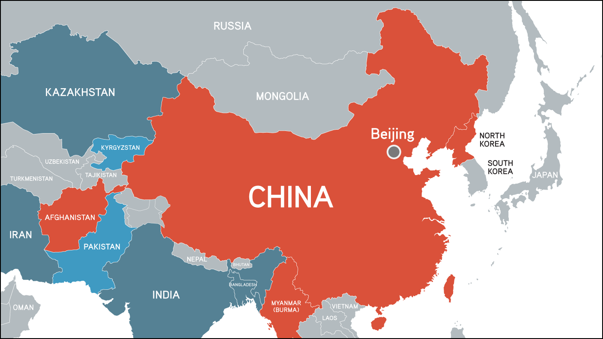

China,known as the People's Republic of China, is the world's most populous country, with over 1.4 billion people. Located in East Asia. In the 20th century,under the Communist leader Mao Zedong China has evolved into a global superpower, with rapid economic growth and modernization, especially since the economic reforms of the late 20th century. Today, China is a permanent member of the United Nations Security Council and plays a central role in global trade, technology, and geopolitics.